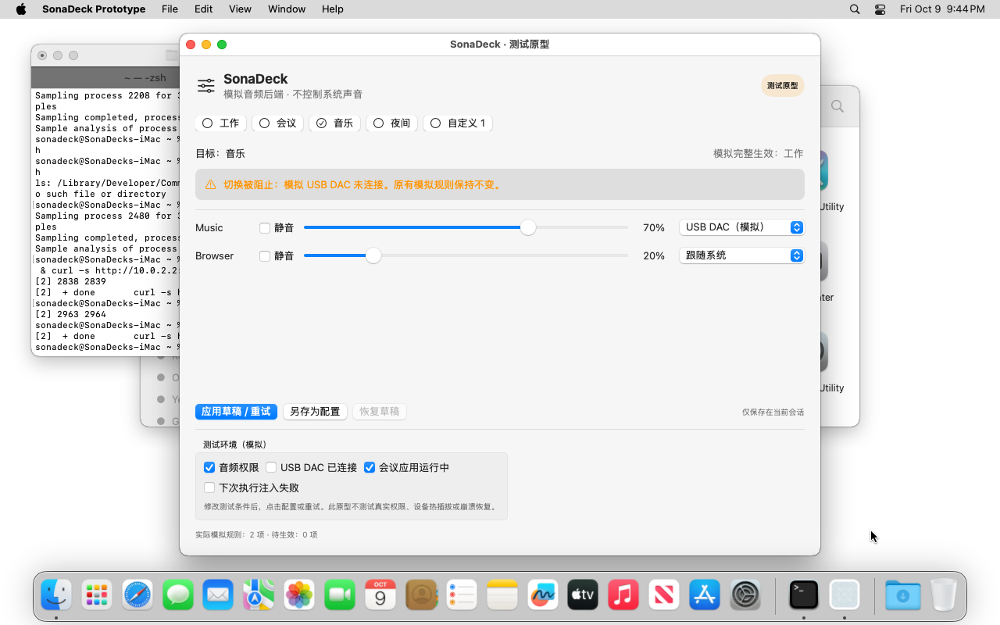 原生原型 UIUI-05 USB 缺失，保留原实际配置 打开原始 PNG · ui-05-missing-device.png 文件时间：2026-10-09T21:44:59+08:00
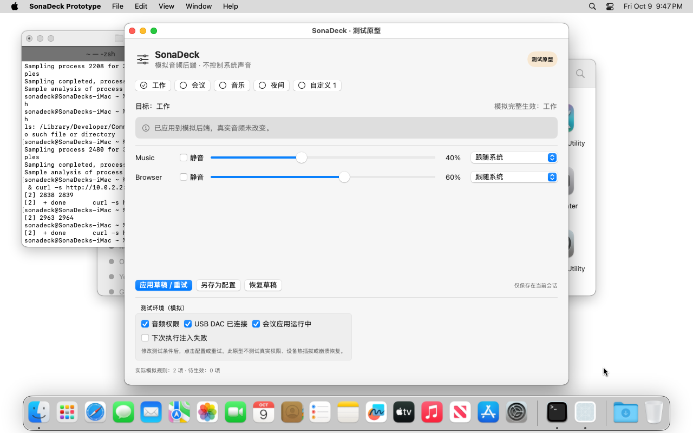 原生原型 UIUI-09 返回配置先应用保存版本 打开原始 PNG · ui-09-saved-version.png 文件时间：2026-10-09T21:47:43+08:00
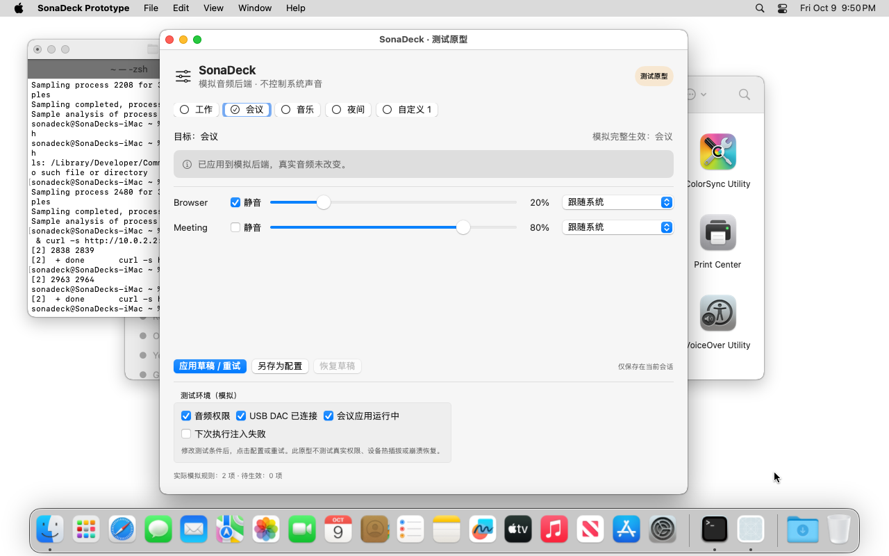 原生原型 UIUI-10 Tab 与 Space 切换配置 打开原始 PNG · ui-10-keyboard-action.png 文件时间：2026-10-09T21:50:01+08:00
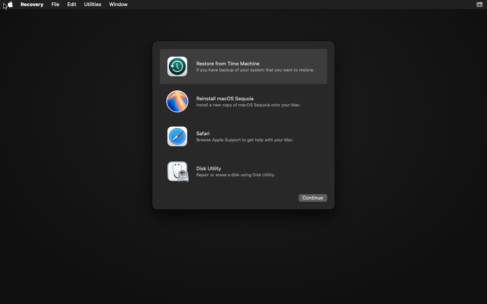 虚拟机环境 · 非产品 UImacOS 恢复主界面 打开原始 PNG · 05-recovery-progress.png 文件时间：2026-10-09T18:54:33+08:00
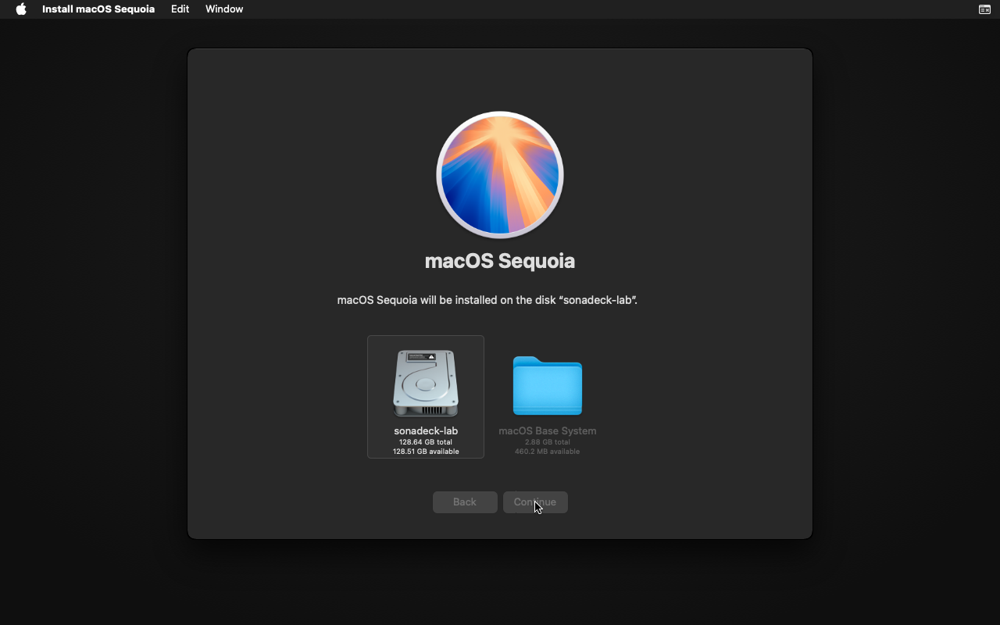 虚拟机环境 · 非产品 UI独立虚拟磁盘安装目标 打开原始 PNG · 06-install-start.png 文件时间：2026-10-09T18:59:32+08:00
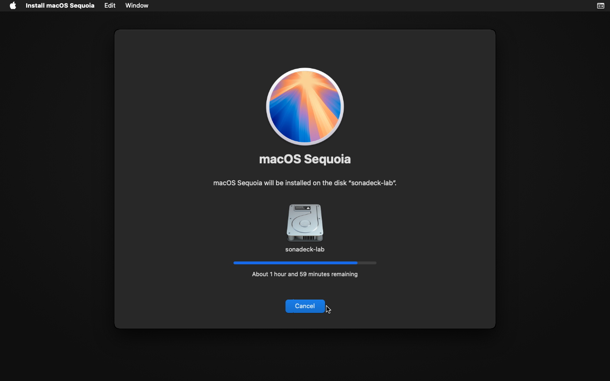 虚拟机环境 · 非产品 UI恢复环境中的安装进度 打开原始 PNG · 07-install-progress.png 文件时间：2026-10-09T19:01:35+08:00
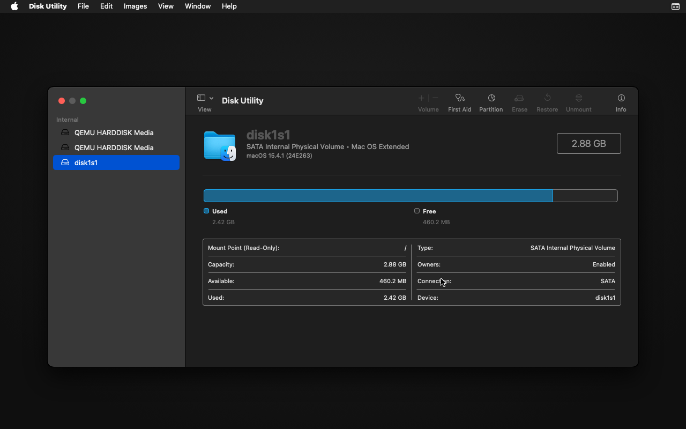 虚拟机环境 · 非产品 UI恢复系统完整版本 打开原始 PNG · 08-recovery-version.png 文件时间：2026-10-09T19:03:10+08:00
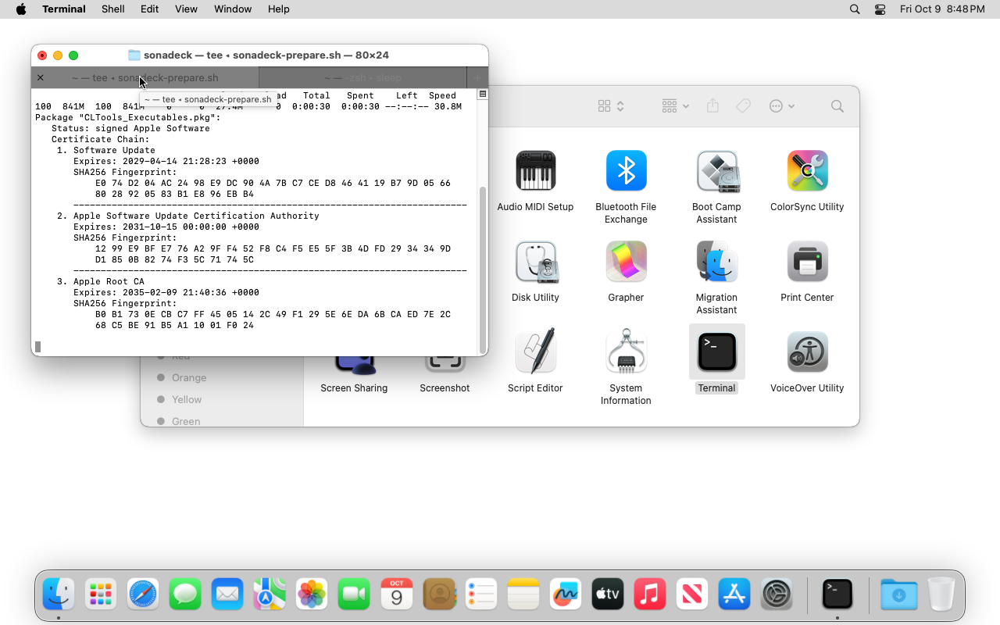 虚拟机环境 · 非产品 UI完整 macOS 桌面与工具链准备 打开原始 PNG · 10-macos-desktop.png 文件时间：2026-10-09T20:48:44+08:00
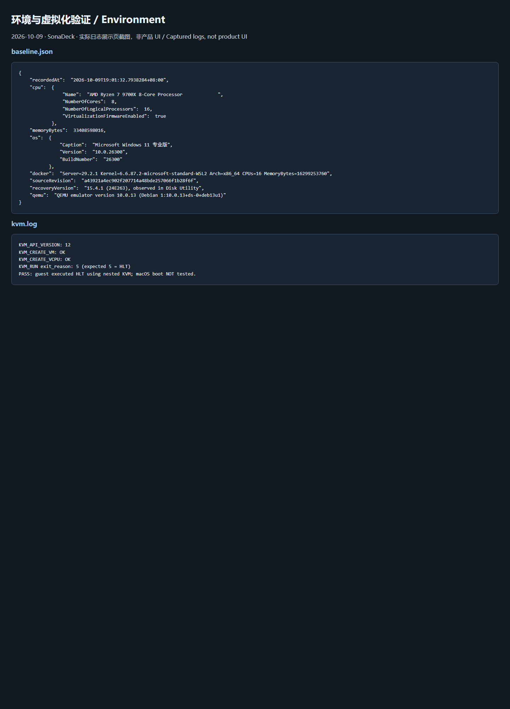 实际日志 · 非产品 UIPC / Docker / KVM 环境日志 打开原始 PNG · environment.png 文件时间：2026-10-09T19:28:10+08:00
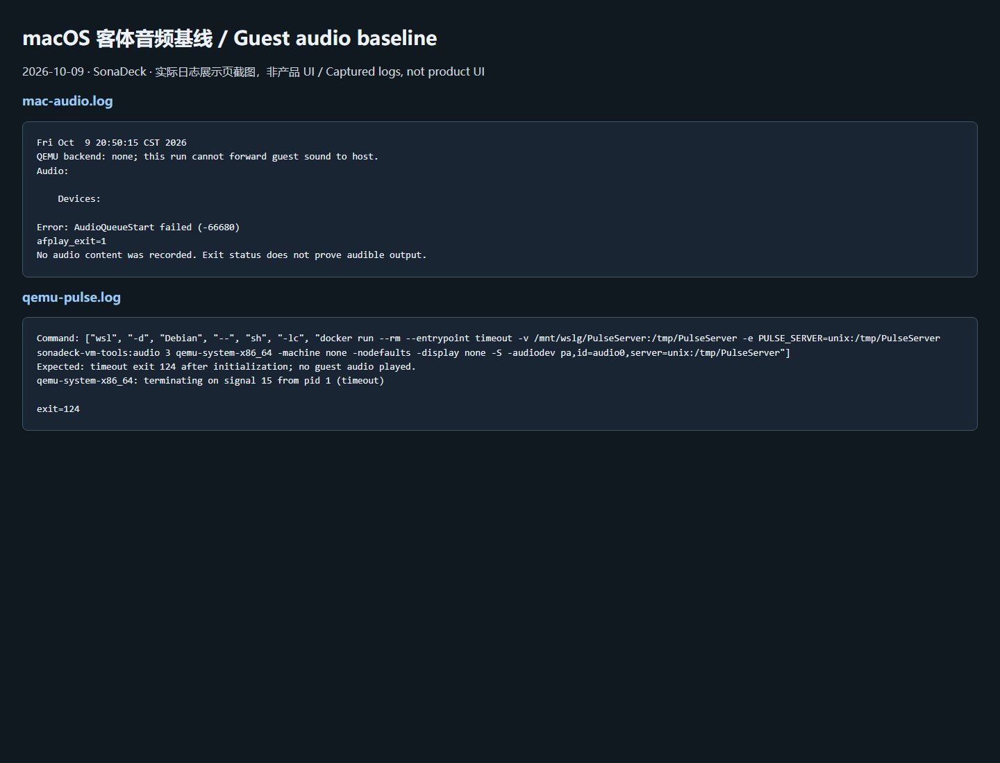 实际日志 · 非产品 UI客体音频失败与 QEMU 端点初始化日志 打开原始 PNG · guest-audio.png 文件时间：2026-10-09T22:01:35+08:00
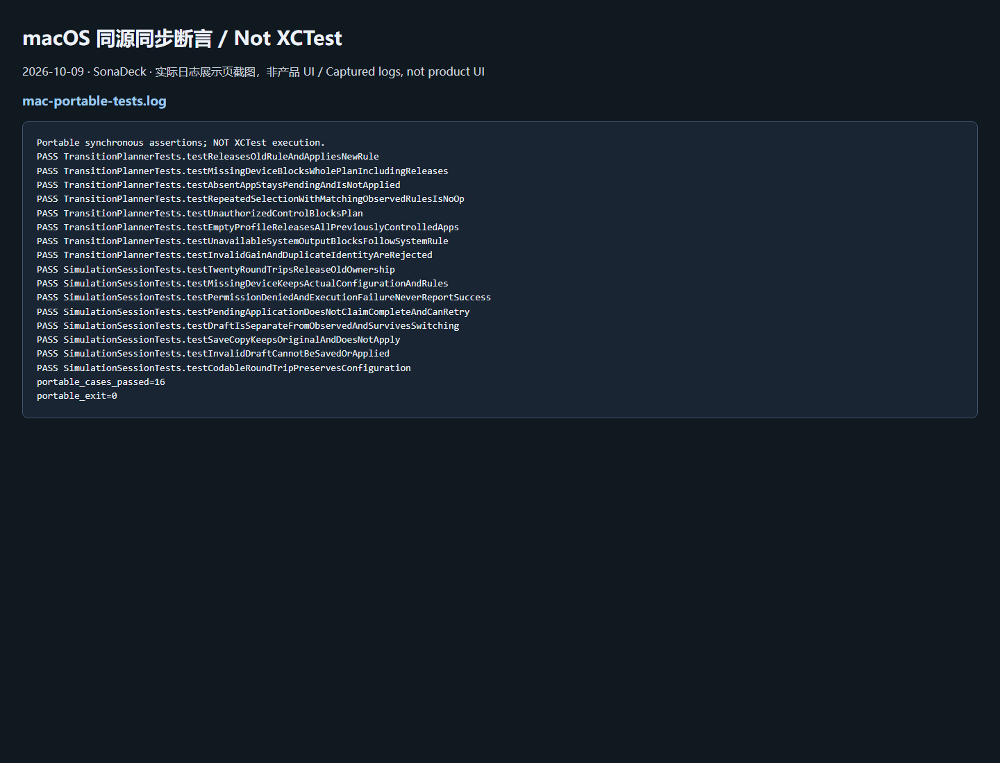 实际日志 · 非产品 UImacOS 16 项同源断言通过（非 XCTest） 打开原始 PNG · mac-portable-tests.png 文件时间：2026-10-09T22:01:34+08:00
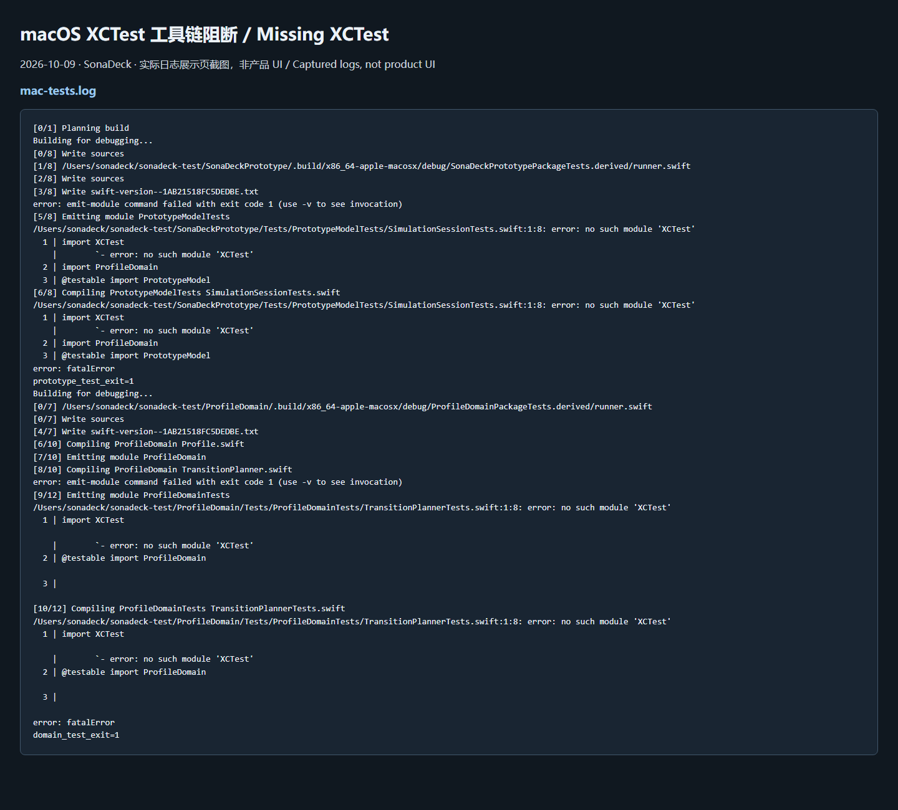 实际日志 · 非产品 UImacOS XCTest 工具链阻断日志 打开原始 PNG · mac-tests.png 文件时间：2026-10-09T22:03:08+08:00